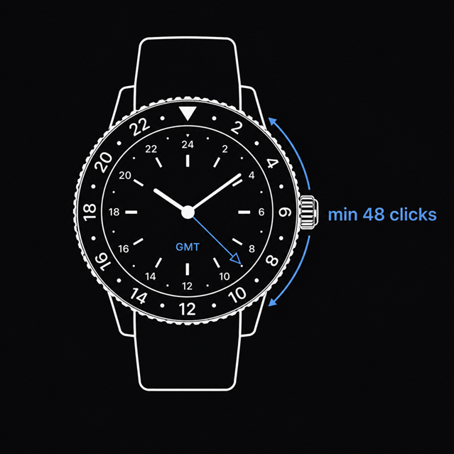

GMT Watch List
This page provides a searchable and filterable GMT Watch List, which apply to following criteria:
- It must be an analog watch
- The watch must allow to track at least two timezones (a.k.a GMT)
- It must be possible to track half-timezones (like IST)
- It should contain an outer bezel with at least 48 clicks (this is related to the point above)
- Mechanical is welcome, but not a must
- Prince point should be below 1500$
- Homages may be acceptable, but no pirate stuff

Main Overview
Honorable Mentions
Take a look at the comments to learn more about the reason a watch is not in the main overview.